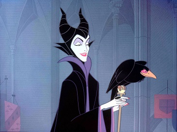
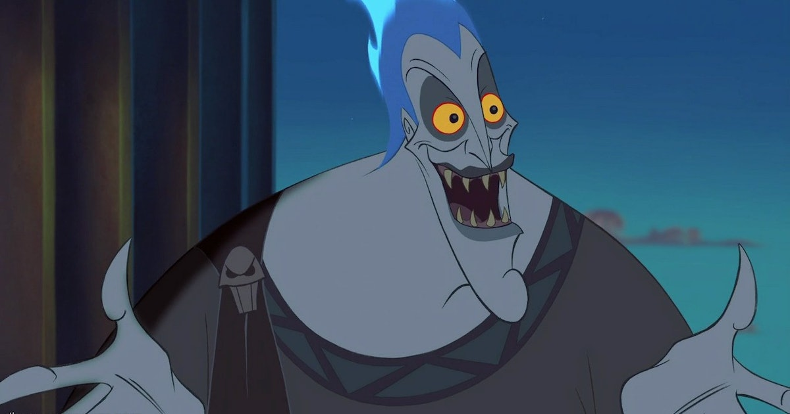
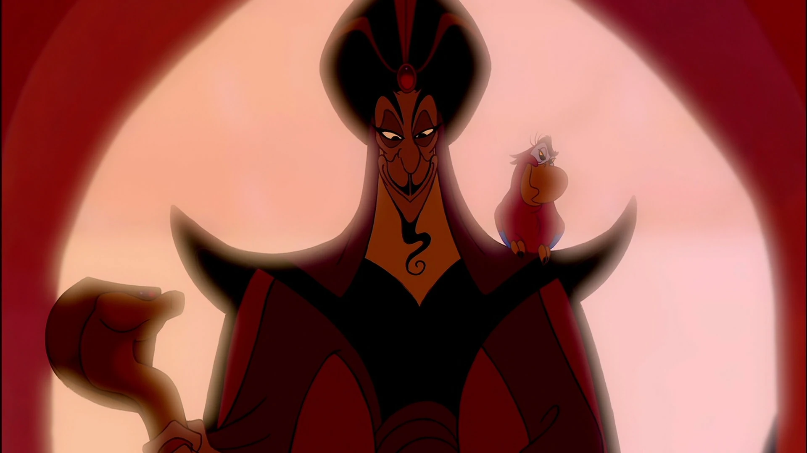
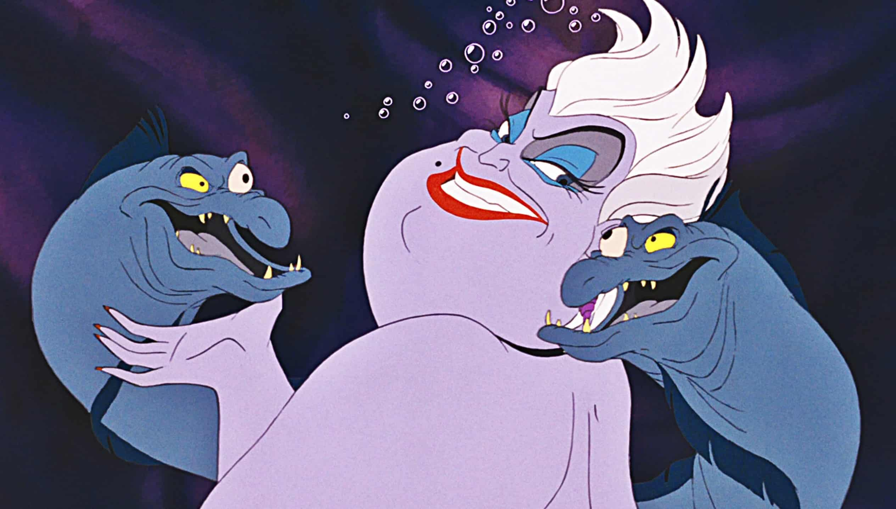
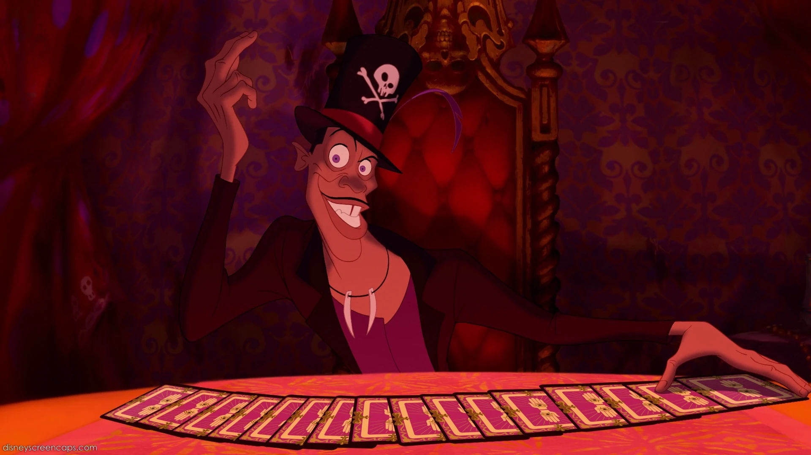

Prolific Disney Villains

Maleficent is the main antagonist of Disney's 1959 animated feature film Sleeping Beauty.
A malevolent fairy, she is an incarnation of pure evil and is responsible for all the misfortune in King Stefan's kingdom.
Taking offense at not being invited to the christening of Princess Aurora by Stefan and his wife, Queen Leah, Maleficent curses the princess to die by pricking her finger on a spinning wheel's spindle before the sun sets on her 16th birthday.
She also appears to be particularly disdainful of Flora, Fauna, and Merryweather, her benevolent rivals. She is frequently accompanied by her pet raven, Diablo.
With her dark, elegant design, dramatic and flamboyant animation, and an unlimited arsenal of magic powers at her command, Maleficent is one of the most popular and recognizable Disney Villains, in addition to being one of the primary members of the official franchise.
With her dark, elegant design, dramatic and flamboyant animation, and an unlimited arsenal of magic powers at her command, Maleficent is one of the most popular and recognizable Disney Villains, in addition to being one of the primary members of the official franchise.

Cruella De Vil is the main antagonist of Disney's 1961 animated feature film 101 Dalmatians. She is an eccentric, fashion-obsessed heiress who wishes to use the skins of 99 Dalmatian puppies to create a spotted fur coat. Regarded as a "witch" and "devil woman", Cruella's infatuation with furs drives her to murderous insanity. She commits immoral acts to satisfy her mania, such as kidnapping and slaughter. In her mad pursuits, Cruella is typically aided by her henchmen, Jasper and Horace.
Cruella first appeared in the novel, The Hundred and One Dalmatians (1956) by Dodie Smith. The Disney villainess proved successful and has led to numerous appearances in other media, most notably the Disney Villains franchise, of which Cruella is a primary member.
Cruella first appeared in the novel, The Hundred and One Dalmatians (1956) by Dodie Smith. The Disney villainess proved successful and has led to numerous appearances in other media, most notably the Disney Villains franchise, of which Cruella is a primary member.

Captain Hook is the main antagonist of Disney's 1953 animated feature film Peter Pan. He is an elegant, yet bloodthirsty pirate that commands The Jolly Roger, a brig docked on the shores of Neverland. Hook has long since abandoned sailing the high seas in favor of having revenge on Peter Pan for cutting off his left hand and feeding it to a crocodile, who has since been in constant pursuit of the captain. While a worthy opponent for Peter, Hook is destined to fail—sometimes because of Peter Pan's ability to fly, but more often through the bumbling incompetence of his first mate, Mr. Smee.
As one of the most recognizable and popular villains in Disney's animated library, Captain Hook is also a primary member of the Disney Villains franchise.
As one of the most recognizable and popular villains in Disney's animated library, Captain Hook is also a primary member of the Disney Villains franchise.

Hades is the main antagonist of Disney's 1997 animated feature film Hercules. He is the fast-talking god of the Underworld, known for having a fiery temper and a vendetta against his eldest brother, Zeus. Over the span of eighteen years, Hades developed a scheme to take over Mount Olympus and the cosmos, but a prophecy by the Fates foretold that a hero would rise against him and end his reign.
While the Hades of Greek mythology was not particularly malevolent, the Disney version portrays him as an evil figure, albeit comedic. This interpretation of the character proved successful, making Hades one of Disney’s most popular antagonists, and a primary member of the Disney Villains line-up.
While the Hades of Greek mythology was not particularly malevolent, the Disney version portrays him as an evil figure, albeit comedic. This interpretation of the character proved successful, making Hades one of Disney’s most popular antagonists, and a primary member of the Disney Villains line-up.

Jafar is the main antagonist of Disney's 1992 animated feature film Aladdin. As Royal Vizier of Agrabah, he was presented as the Sultan's most trusted and loyal advisor. In truth, the imperious Jafar held passionate disdain for the Sultan. He dedicated the latter half of his life to gaining ownership of a magic lamp containing an all-powerful genie — to that end, Jafar would control cosmic power, which he would use to overtake the throne and the world at large.
Jafar is loosely based on the wicked sorcerer and vizier from the Aladdin folk tale in the One Thousand and One Nights collection of stories. With an elegant, yet cheeky approach to villainy, coupled with a dry sense of humor and menace, Jafar is among Disney's most renowned villains, and would later feature as a primary member of the Disney Villains franchise.

Ursula is the main antagonist of Disney's 1989 animated feature film The Little Mermaid. She is a villainous sea witch who strikes deals with unfortunate merfolk with the promise of making their dreams come true. Ursula's contracts, however, are covertly designed to advance her own ambitions and cause general misery. In the past, Ursula was a resident of King Triton's palace, before being banished and exiled by order of the king. Scorned, she has since vowed to exact vengeance by harnessing the power of the king's trident and installing herself as ruler of all the ocean.
Ursula is loosely based on the nameless sea witch from the original Hans Christian Andersen tale, while her characterization takes inspiration from the drag queen Divine. Ursula's fervent confidence and theatricality have been met with critical praise, and have influenced villains that followed. She has since featured prominently as a primary member of the Disney Villains line-up.

Dr. Facilier (commonly known as the Shadow Man) is the main antagonist of Disney's 2009 animated feature film The Princess and the Frog. He is an evil, smooth-talking voodoo witch doctor who plots to rule New Orleans with help from his "friends on the other side". Having come from a poor background, Facilier grew to resent the rich and prosperous—none so much as the most powerful man in the city, Eli "Big Daddy" La Bouff. Facilier sought to supersede his rival using voodoo and pawns while offering the souls of New Orleans' denizens to his "friends" as recompense.
Since his inception, Facilier has garnered critical acclaim and major popularity with fans, making him one of Disney's most popular villains. In response, he quickly became a primary member of the Disney Villains line-up.
Since his inception, Facilier has garnered critical acclaim and major popularity with fans, making him one of Disney's most popular villains. In response, he quickly became a primary member of the Disney Villains line-up.